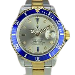
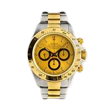
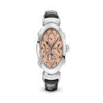

Descrição do produto: Com 576 diamantes e um opulento mostrador de safira,
o relógio conhecido como “Jaeger-LeCoultre Joaillerie 101 Manchette” foi um presente dado
para a Rainha Elizabeth II em comemoração aos seus 60 anos de reinado.
Preço: U$ 26.000.000,00

Rolex Datejust
Descrição do produto: O Rolex Datejust é um relógio clássico e elegante que
é perfeito para qualquer ocasião. O mostrador prateado é complementado por um bisel canelado
e uma pulseira Jubilee de aço inoxidável. O relógio é alimentado pelo movimento automático
Calibre 3235, que oferece uma reserva de marcha de 70 horas.
Preço: R$ 15.000,00

Rolex Oyster Perpetual Datejust 41
Descrição do produto: O Rolex Oyster Perpetual Datejust 41 é um relógio
clássico e elegante, perfeito para qualquer ocasião. O mostrador azul profundo é
complementado por um bisel canelado e uma pulseira Jubilee de aço inoxidável. O relógio é
alimentado pelo movimento automático Calibre 3235, que oferece uma reserva de marcha de 70
horas.
Preço: R$ 73.500,00

Patek Philippe Grandmaster Chime Ref. 6300A-010
Descrição do produto: O relógio apresenta mostradores em opalina azul e os
numerais foram aplicados em ouro, sendo que a placa central foi produzida em ouro maciço de
18 quilates. A pulseira do relógio também apresenta um material muito raro. Ela foi
produzida com couro de crocodilo azul marinho.